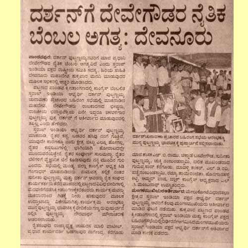
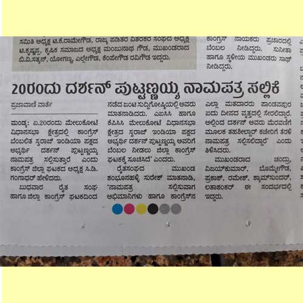
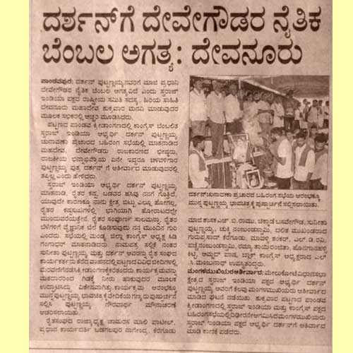
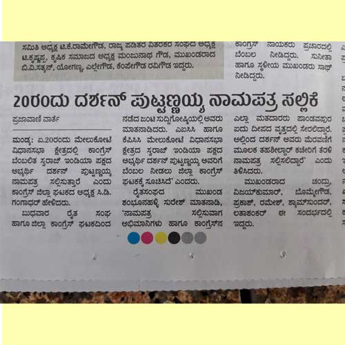

Swaraj India is a Political Party with a mission to usher in probity, transparency, and accountability in electoral politics. Swaraj India was founded on 2nd October 2016.
Today, the founding values of our republic are under threat. Democracy, Diversity and Dialogue is under attack, ironically by the ones who are entrusted to safeguard these values. The very idea of India is under a challenge. Sadly, there is no political force that has the vision and the will to take on this challenge. Swaraj India has taken up the challenge to fill up this vacuum.
What is different about the Party?
The name of the Party will be SWARAJ INDIA (hereinafter referred to as “the Party”).
Membership of the Party, subject to other clauses of this Article, is open to any Indian without discrimination as to age, caste, ethnic origin, religion, disability, gender or sexual orientation, who agrees with its objectives and principles and who:
The term of membership, subject to renewal, termination or resignation, will be 2 years. Provided that for the purpose of this clause, a year will be taken as the period commencing from 1st of April of a calendar year to the 31st of March of the succeeding year. Provided, further that for the first year of membership, a year will be taken as the period commencing from the date of membership up to the following 31st of March. Provided, further that the Party will send a reminder to all members whose membership is due for renewal. Members will have a grace period of three months to renew their membership in cases where such reminder was sent, failing which their membership will lapse. However, in case no reminder has been sent, the grace period will be 6 months.
A person will cease to be a member of the Party in the following events:
A person’s membership will stand terminated if
Each State Executive will organize and coordinate the activities of the Party at the State Level.
| Designation Name | Specific | Mobile No. | Responsibilities |
|---|---|---|---|
| President | Chamarasa Mali Patil | ||
| Working President | Amjad Pasha | ||
| General Secretary | Darshan Puttannaiah | ||
| Joint Secretaries (State) | Abhiruchi Ganesh Suresh Babu Jaamdaar |
||
| Office Secretary | JM Veerasangaiah | +91-9342658829 | |
| State Co-ordinator | Rashmi Munikempanna | +91-8762805428 | |
| Media Coordinator | Vijaykumar Seethappa | +91-9535368657 | |
| David Bodapati (till elections) | +91-9845569496 | ||
| Social Media Coordinator | Pratima Naik | +91-9916601969 |
"To accomplish great things, we must not only act, but also dream; not only plan, but also believe"
| Designation Name | Specific | Mobile No. | Responsibilities |
|---|---|---|---|
| President | Chamarasa Mali Patil | ||
| Working President | Amjad Pasha | ||
| General Secretary | Darshan Puttannaiah | ||
| Joint Secretaries (State) | Abhiruchi Ganesh Suresh Babu Jaamdaar |
||
| Office Secretary | JM Veerasangaiah | +91-9342658829 | |
| State Co-ordinator | Rashmi Munikempanna | +91-8762805428 | |
| Media Coordinator | Vijaykumar Seethappa | +91-9535368657 | |
| David Bodapati (till elections) | +91-9845569496 | ||
| Social Media Coordinator | Pratima Naik | +91-9916601969 |
9845177160
contact@swarajindia.org
8762805428, 9342658829
contact@swarajindia.org


 




+release+Swaraj+India+manifesto+on+3may2018.JPG)


| Candidate Name | Assembly Constituency | District | Profile |
|---|---|---|---|
| Darshan Puttannaiah | Melukote | Mandya | |
| Linge Gowda S. H. | Maddur | Mandya | |
| K. L. Swamy (Garudagambha Swamy) | Krishnarajanagara | Mysore | |
| K. P. Bhutaiah | Challakere | Chitradurga | |
| P. Ramesh Chander | Mahadevapura | Bangaluru Urban | |
| D. Srikantaswamy (Shailendra) | Hanur | Chamarajnagar | |
| Dr. Doddamallaiah | Chitradurga | Chitradurga | |
| Kenganal Mallikarjun Bhimappa | Basavana Bagevadi | Bijapur | |
| Duguru Parameshwara | Sagar | Shimoga | |
| H. B. Gangadharappa Hunavalli | Sorab | Shimoga | |
| Bhanu Mohan | Krishnaraja | Mysore |
What is the integrity committee?
The integrity committee has been set up as an independent committee to review and rule on complaints regarding the candidates selected by the Swaraj India Party. The committee is headed by an independent person, who is in no way connected to the party or its affairs and is not a member of the party. The ruling of the Integrity Committee is binding on Swaraj India.
Who are the members of the committee?
Ms. Anjali Bhardwaj- Chairperson (independent of the party)
Prof. Bharat Seth (independent of the party)
Mr. Ravi Chopra
Mr. Faheem Khan
Capt. Narayan Das
P.S.Sharda
What is the mandate of the committee?
The mandate of the committee is to receive and rule on complaints regarding the candidates selected by the Swaraj India Party. The committee shall look into complaints regarding issues of integrity related to the 4C's only - Character, Corruption, Communalism & Criminality.
How can a complaint be filed to the committee?
Complaints have to be filed in writing. The complaint must be on issues of integrity related to the 4C's - Character, Corruption, Communalism & Criminality. Each complaint must be accompanied with relevant documents/material in support of the allegations contained in the complaint. The complaint may be sent by:
Email: swarajindia.ic@gmail.com
Registered/Speed Post/By Hand (in a sealed cover and “Integrity Committee” written on top of the envelope):
Mr. P.S. Sharda
285, Lawyers Chamber
Block 2, Delhi High Court
Sher Shah Road
New Delhi-110003
All complaints sent via post or delivered by hand must be in a sealed cover and addressed to the Integrity Committee.
What should the complaint include?
Each complaint must be accompanied with relevant documents/material in support of the allegations contained in the complaint. It is recommended that the complainant provide his/her name and contact address and phone number to enable the committee to provide an opportunity of being heard to the complainant in the process of looking into a complaint. However, complaints may also be made anonymously.
What action can the committee take?
The committee can, in its ruling, direct the party to take any such action as deemed fit by the committee. The decision of the committee shall be binding.
In how much time will the committee respond?
The Committee shall endeavour to arrive at the final decision with respect to each complaint ASAP, within ten days of the same being received by the Committee.
THE FARMERS’ RIGHT TO ASSURED REMUNERATIVE PRICES FOR AGRICULTURAL PRODUCE BILL, 2017
KRISHI UPAJ LAABHKARI MOOLYA GUARANTEE BILL
A Bill
to confer a right on all farmers, to obtain an assured remunerative price upon sale of agricultural produce and for matters connected therewith or incidental thereto.
WHEREAS safeguarding the right to livelihood is essential for the realization of right to life under Article 21 of the Constitution of India;
AND WHEREAS, article 38(2) of the Constitution provides that the State shall, in particular, strive to minimize the inequalities in income, and endeavour to eliminate inequalities in status, facilities and opportunities not only amongst individuals but also amongst groups of people residing in different areas or engaged in different vocations;
AND WHEREAS, article 39(a) of the Constitution provides that the State shall direct its policies towards securing that the citizens, men and women equally, have the right to an adequate means of livelihood;
AND WHEREAS farmers do not get adequate return of their investment and toil despite good production, and therefore the condition is steadily deteriorating and tens of thousands of farmers are committing suicide every year;
AND WHEREAS, the price realized by farmers for their produce is not providing sufficient returns above the cost of production to provide income to sustain basic needs of the households;
AND WHEREAS, ensuring adequate returns in agriculture is essential to safeguarding the food security and food sovereignty of the nation;
AND WHEREAS, to improve the condition of farmers and ensure food sovereignty of the nation, it is essential to provide them a right to assured remunerative price for all agricultural produce;
AND WHEREAS, the government is obligated to prevent farmer suicides;
NOW, THEREFORE, Be it enacted by Parliament in the Sixty-eighth year of the Republic of India, as follows:-
Bill No. XXX of 2017
THE FARMERS’ RIGHT TO ASSURED REMUNERATIVE PRICE FOR AGRICULTURAL PRODUCE, 2017
A
BILL
To confer a right on all farmers, to obtain an assured remunerative price upon sale of agricultural produce, and for matters connected therewith, or incidental thereto.
BE it enacted by the Indian Parliament in the sixty-eighth Year of the Republic of India as follows:-
|
1. |
Chapter I: PRELIMINARY – DEFINITIONS & INTERPRETATIONS (1) This Act may be called the Farmers’ Right to Assured Remunerative Price for Agricultural Produce, 2017 (2) It shall come into force on such date as the Central Government may, by notification in the Official Gazette, shall specify in this behalf. (3) It extends to the whole of India. |
Short title, extent, and commencement |
|
2. |
In this Act, unless the context otherwise requires,-
|
Definitions |
|
\3. |
Chapter II: ASSURED REMUNERATIVE PRICE FOR ALL AGRICULTURAL COMMODITIES
(2) The Government, through the Commission on Agricultural Costs and Prices (CACP), shall institute robust, accurate systems for estimation of Cost of Production for all agricultural commodities produced by Farmers as defined under Schedule of this Act, Provided that
(3) The Assured Remunerative Price shall be fixed based on the recommendations of the CACP, Provided that the Assured Remunerative Price shall provide at least 50% profit margin above the comprehensive Cost of Production as stipulated in 3(2); (4) As soon as may be, after the receipt of recommendation of the Commission, Central Government shall declare the Assured Remunerative Prices of all agricultural commodities; (a) Further specified that the Assured Remunerative Prices shall be declared by the Government on or before March 31st of every year for the ensuing Kharif production season and on or before August 31st of every year for the ensuing Rabi production season; (5) Nothing shall preclude the State Governments from declaring a bonus in addition to the Assured Remunerative Price declared by the Central Government. |
Right of Farmers to Assured Remunerative Price Comprehensive estimation of Cost of Production Determination of Assured Remunerative Price Declaration of Assured Remunerative Price by Central Government Power of States to declare bonuses |
|
4. |
Chapter III: COMMISSION ON AGRICULTURAL COSTS AND PRICES (CACP) (1) The Government shall bring under the purview of this Act, as soon as may be after the commencement of this Act, by notification in the Gazette, the existing Commission on Agricultural Costs and Prices (CACP), for the purpose of exercising the powers and performing the functions under this Act, with consequent changes in the existing constitution, mandate and terms of reference. (2) The Commission shall be expanded to consist of eleven members, namely:–
(3) The Chairperson and Members shall be nominated by the Government. (4) Such nominations shall take into consideration equitable regional representation from across the country, sectoral representation and gender, especially for sub-section (2) (iii) and (iv) above, and on a rotational basis for representation of different states every time the Commission is re-constituted or vacancies filled. (5) Government shall ensure that no Member including Chairperson represents any conflict of interest pertaining to the discharge of their functions. (6) The Government to appoint as many staff members as may be necessary, to assist the Commission in such manner as may be prescribed. (7) In the discharge of their duties, the Secretary and other staff referred to in subsection (6) shall be subject to the administrative control of the Chairperson. |
Re-organising the Constitution of CACP and setting |
|
5. |
(1) The term of the Commission shall be 5 years: Provided that, the Government may extend such period, if deemed necessary; (2) A member may, by writing under his/her hand and addressed to the Government, resign his/her office at any time. (3) A vacancy arising by reason of resignation of any member of the Commission under subsection (2) or otherwise shall be filled up in accordance with the provisions contained in section (4) of this Act: Provided that the person so appointed shall hold office only for the remaining period of term of the person, in whose place s/he is appointed. (4) Government may remove any member, if s/he,--
Provided that the person may be given an opportunity of being heard, before proceeding as such. (5) The Commission shall regulate its own procedure for the conduct of its business. (6) The salary and allowances, and the other conditions of service of the Chairperson and members shall be, as may be prescribed. |
Term of the Commission and conditions of service of the members |
|
6. |
|
Powers and functions of the Commission |
|
7. |
|
Transparent functioning, and Annual Report to be laid before the Parliament |
|
8. |
|
Accounts and Audit |
|
9. |
Chapter IV: STATE COMMISSIONS ON AGRICULTURAL PRICES
(3) The Chairperson and Members shall be nominated by the State Government. (4) Such nominations shall take into consideration equitable regional representation from across the country, sectoral representation and gender, especially for sub-section (2) (iii) and (iv) above, and on a rotational basis for representation of different regions within a state every time the Commission is re-constituted or vacancies filled. (5) State Government shall ensure that no Member including Chairperson represents any conflict of interest pertaining to the discharge of their functions. (6) The State Government to appoint as many staff members as may be necessary, to assist the State Commission in such manner as may be prescribed. (7) In the discharge of their duties, the Secretary and other staff referred to in subsection (6) shall be subject to the administrative control of the Chairperson under 9 (2) (i) above. |
Constitution of State Commissions on Agricultural Prices |
|
10. |
(1) The term of the State Commission shall be 5 years: Provided that, the State Government may extend such period, if deemed necessary; (2) A member may, by writing under his/her hand and addressed to the Government, resign his/her office at any time. (3) A vacancy arising by reason of resignation of any member of the State Commission under subsection (2) or otherwise shall be filled up in accordance with the provisions contained in section 8 of this Act: Provided that the person so appointed shall hold office only for the remaining period of term of the person, in whose place s/he is appointed. (4) State Government may remove any member, if s/he,--
Provided that the person may be given an opportunity of being heard, before proceeding as such. (5) The State Commission shall regulate its own procedure for the conduct of its business. (6) The salary and allowances, and the other conditions of service of the State Commission Chairperson and members shall be, as may be prescribed. |
Term of the State Commission and conditions of service of the members |
|
11. |
|
Powers and functions of the State Commission on Agricultural Prices |
|
12. |
Chapter V: IMPLEMENTATION OF ASSURED REMUNERATIVE PRICE
(3) The Government shall open adequate number of procurement centres for all commodities in as localised a manner as possible, for procuring sufficient quantities through food schemes and commodity corporations at or above Assured Remunerative Price to ensure a market for the farmers’ produce; (4) The Government shall implement timely and effective market intervention scheme in all commodities when market prices are going down, and shall provide sufficient financial outlays to ensure purchases at Assured Remunerative Price; (5) The Government shall implement effective mechanism for identifying the actual cultivators including tenant farmers and sharecroppers and ensuring that they get the benefit of Assured Remunerative Price, procurement and market intervention; (7) The Government shall be responsible for implementing effective schemes to prevent farmers from selling produce at low cost due to financial compulsion, including massive increase in access to storage facilities to enable all farmers to store their produce and sell at a time of remunerative prices, and schemes like warehouse receipts which enable the farmers to access finance of at least 75% of the value of the stored crop valued at Assured Remunerative Price or market value whichever is higher; (8) The Government shall invest in organising farmers into Farmer Producer Organisations, with sufficient infrastructure and financial capital to run their marketing enterprises including processed, value-added produce; (9) The Government shall take all measures to reduce the cost of production by reducing the input costs through subsidies and schemes, and by promoting low-cost sustainable methods of agriculture |
Bar on auction or offer of price below Assured Remunerative Price Obligation on the government to open Procurement Centres Timely and effective market intervention Actual benefit to go to real cultivators Other measures to prevent distress sales Investments on FPOs Measures to reduce and regulate input costs |
|
13. |
Chapter VI: GRIEVANCE REDRESSAL BY WAY OF DEFICIT PAYMENT AND COMPENSATION
|
Entitlement to Deficit Payment District level Grievance Redressal Committee and Orders for Deficit payment through DBT Compensation for delays |
|
14. |
Chapter VII: OBLIGATIONS ON THE CENTRAL AND STATE GOVERNMENTS
|
Obligations of the Central Government |
|
15. |
Chapter VIII: OFFENCES AND PENALTIES
|
Offences and Penalties under this Act |
|
16. |
Chapter IX: MISCELLANEOUS The provisions of this Act or any rule or order made thereunder shall have effect notwithstanding anything inconsistent therewith contained in any law, other than this Act, or any instrument having effect by virtue of any law other than this Act. |
Overriding effect of Act. |
|
17. |
Every member of the Commission nominated under sub-section (2) of section 4, sub-section (2) of section 9 and the Secretary and other staff appointed under sub-sections (6) of Section 4 and 9, shall be deemed to be a public servant within the meaning of section 21 of the Indian Penal Code 1860 (Central Act 45 of 1860). |
Members of the Commission shall be public servants. |
|
18. |
(1) If any difficulty arises in giving effect to the provisions of this Act, the Government may, by order, as occasion requires, do anything not inconsistent with the provisions of this Act, which appears to them to be necessary for the purpose of removing the difficulty: (2) Every order made under this section shall be laid before the Parliament. |
Power to remove difficulties |
|
19. |
(1) The Government may, by notification in the Gazette, make rules for the purpose of carrying in to effect the provisions of this Act. (2) Every rule made under this section, shall be laid, as soon as may be after it is made, before the Parliament while it is in session for a total period of fourteen days which may be comprised in one session or in two successive sessions and if before the expiry of the session in which it is so laid or the session immediately following, the Parliament makes any modification in the rule or decides that the rules should not be made, the rule shall thereafter have effect only in such modified form or be of no effect, as the case may be; so however that any such modification or annulment shall be without prejudice to the validity of anything previously done under that rule. |
Power to make rules. |
KISAN KARZA MUKTI BILL/VIDHEYAK, 2017
THE FARMERS’ FREEDOM FROM DEBT BILL, 2017
A
BILL
To provide immediate loan waiver to indebted farmers and to provide continuous relief to those farmers who are in distress due to indebtedness by constituting a commission with power to pass awards and to recommend appropriate measures for the redressal of the grievances of indebted farmers and matters connected therewith and incidental thereto.
__________
STATEMENT OF OBJECTS AND REASONS
WHEREAS, the nation is indebted to farmers for the food security and sovereignty functions that they contribute to;
AND WHEREAS, farm commodity prices have been kept low as a policy measure, with several regulations on marketing, which in turn adversely affected farmers’ returns and built up indebtedness;
AND WHEREAS, there has been a failure to keep input prices in check, to provide comprehensive institutional credit facilities, to execute effective risk insurance and disaster relief measures, and to build infrastructure which have in turn resulted in losses for farmers leading to debt;
AND WHEREAS, certain districts and crops in the country are afflicted by severe distress due to the agrarian crisis, and it ruined many farmers financially and led to suicides;
AND WHEREAS, several suits and other proceedings have been filed in courts, tribunals and other authorities for the recovery of debts accrued from farmers;
AND WHEREAS safeguarding the right to livelihood is essential for the realization of right to life under Article 21 of the Constitution of India;
AND WHEREAS, it is expedient to provide relief to the farmers who are in distress due to indebtedness, by providing immediate relief as well as by constituting a Commission with power to pass awards after adjudication and recommend appropriate measures for the redressal of the grievances of such farmers through conciliation and negotiation and for matters connected there with or incidental thereto;
Bill No. of 2017
THE FARMERS’ FREEDOM FROM DEBT BILL, 2017
A
BILL
To provide immediate complete loan waiver to indebted farmers and to provide continuous relief to those farmers who are in distress due to indebtedness by constituting a commission with power to pass awards and to recommend appropriate measures for the redressal of the grievances of such farmers and matters connected therewith and incidental thereto.
BE it enacted by the Indian Parliament in the sixty-eighth Year of the Republic of India as follows:-
CHAPTER I
PRELIMINARY: DEFINITIONS & INTERPRETATIONS
|
1. |
(1) This Act may be called the Farmers’ Freedom from Debt Act, 2017. (2) It shall come into force on such date as the Central Government may, by notification in the Official Gazette, shall specify in this/her behalf. (3) It extends to the whole of India. |
Short title, extent, and commencement |
|
2. |
In this Act, unless the context otherwise requires,-
But does not include any loan amount taken by the farmer for commercial purposes or luxury other than agricultural allied commercial purposes, to augment his/her income;
|
Definitions |
|
CHAPTER II IMMEDIATE DEBT RELIEF |
||
|
3. |
(1) Every farmer, including all categories as defined in Section 2, shall be entitled to immediate unconditional waiver of the entire amount of outstanding institutional loans as of 20th November, 2017; (2) Farmers who have repaid the bank loans from the earlier financial year to the cut-off period of sub-section (1) above shall have their accounts credited with the amount of scale of finance for the crop grown; (3) The waiver of loans shall be implemented in a single instalment and the Government shall take all measures to ensure the issuance of fresh loans to all eligible farmers in the ensuing season without any impact due to the implementation of loan waiver; (4) The Government shall provide sufficient funds to the State governments to implement waiver of loans from cooperative banks; (5) All farmer loans from non-institutional sources shall be converted through debt-swapping into institutional loans. The government shall specify a process for the same; (6) The Government shall implement a waiver of such bank loans arising out of debt-swapping. |
Right of farmer to receive relief from debt. |
|
CHAPTER III FARMERS’ DEBT RELIEF COMMISSION |
||
|
4. |
(1) The Government shall, as soon as may be after the commencement of this Act and after implementing Section 3, by notification in the Gazette, constitute a Commission by the name, "the National Farmers' Debt Relief Commission", for the purpose of exercising the powers and performing the functions under this Act. (2) The Commission shall consist of nine members, namely:–
(3) The Chairperson and Members shall be nominated by the Government. (4) Such nominations shall take into consideration equitable regional representation from across the country, sectoral representation and gender, especially for sub-section (2) (iii)-(v) above. (5) Government shall ensure that no Member including Chairperson represents any conflict of interest pertaining to the discharge of their functions. (6) The Government may, appoint a Secretary and other staff as may be necessary, to assist the Commission in such manner as may be prescribed. (7) In the discharge of their duties, the Secretary and other staff referred in subsection (6) shall be subject to the administrative control of the Chairperson. |
Constitution of the Commission. |
|
5. |
(1) The term of the Commission shall be 5 years: Provided that, the Government may extend such period, if deemed necessary and provided that the existing Commission may continue to function for upto one additional year till new Commission is appointed. (2) A member may, by writing under his/her hand and address to the Government, resign his/her office at any time. (3) A vacancy arising by reason of resignation of any member of the Commission under subsection (2) or otherwise shall be filled up in accordance with the provisions contained in section 4 of this Act: Provided that the person so appointed shall hold office only for the remaining period of term of the person, in whose place s/he is appointed. (4) Government may remove any member, if s/he,--
Provided that the person may be given an opportunity of being heard, before proceeding as such. (5) The Commission shall regulate its own procedure for the conduct of its business. (6) The salary and allowances, and the other conditions of service of the Chairperson and members shall be, as may be prescribed. |
Term of the Commission and conditions of service of the members. |
|
6. |
(1) The Commission shall have all such powers as are necessary for achieving the objects of this Act, and in particular.-
(2) Issue orders in case of farmers described in clause (d) of sub-section (1) to the creditors, other than institutional creditors, (a) to keep in abeyance the repayment of all debts considering the nature of crops and crop loss, for a period not less than one year but not more than 3 years: Provided that such orders shall be subject to the awards and directions under sub-section (1). (b) to initiate and facilitate on behalf of farmers with regard to loans from creditors, debt-swapping with institutional creditors, with interest liability borne by the government; (3) An award passed by the Commission under clause (d) of sub section (1) shall be binding on the respondent. (4) The awards of Commission under clause (d) of sub-section (1) shall be executed under the provisions of the Code of Civil Procedure, 1908 (Central Act 5 of 1908) as if it is decree of a Civil Court, and accordingly, Title Deeds or any other documents pertaining to the loan with the creditor have to be returned to the farmer, as the case may be within the specified time. The awards of the Commission shall be executed within a specific time period of 30 days or otherwise, as specified in each award. A farmer may obtain an Execution Decree from a Civil Court if the respondent party does not comply to the time limit. (5) The Commission shall, for the purpose of exercising the powers conferred by or under this Act, have all the powers of a Civil Court while trying a suit under the Code of Civil Procedure, 1908 (Central Act 5 of 1908), in respect of the following matters, namely: -
|
Powers and functions of the Commission. |
|
7. |
As soon as may be, after the receipt of a recommendation under clause (c) of sub-section (1) of section 6 the Government shall declare, as the case may be, an area or a crop as a distress affected area or a distress affected crop. |
To declare as distress affected area or distress affected crop. |
|
8. |
A farmer claiming any debt relief under this Act shall file an application before the Commission in a manner and in the form as may be prescribed. |
Application for debt relief. |
|
9. |
(1) The Commission shall hold its sittings at such places and at such times as may be determined by it : Provided that the Commission shall hold its sittings in the respective district/districts declared as distress affected areas to consider matters relating to the distress affected areas. (2) The quorum for the sitting of the Commission shall be five. (3) The Commission may in appropriate cases it deems fit, hold sittings in districts by constituting a Bench consisting of two or more members: Provided that at least one member representing the farmer in the Commission shall be included in the Bench so constituted: Provided further that in case of the Bench constituted by the Commission, the quorum for the meeting of the Bench shall be the total number of members of that Bench or two whichever is less. |
Sittings of the Commission |
|
10. |
(1) Notwithstanding anything contained in this Act or in any other law or contract or decree or order of any Court or Tribunal, a member authorised by the Commission may pass order to
|
Special provisions in respect of settlement of certain loans taken by farmers. |
|
11. |
(1) Notwithstanding anything contained in this Act or in any other law or contract or decree or order of any Court or Tribunal, the Commission may reschedule the recovery of loans availed by a farmer described in clause (c) of sub-section (1) of section 6 on or before the date of declaration as a distress affected area, distress affected crop under section 7 or a distress affected farmer from any financial institution notified by the Government for this purpose. (2) Where the rescheduling of the loan is made under sub-section (1), the farmer shall be bound to repay such loan to the financial institution concerned within the period allowed by Commission, with the interest liability borne by the government: Provided that the Commission may, on application by the farmer, exempt him/her, by order, from the repayment of the same for the period so rescheduled, for the reasons to be recorded: Provided further that the farmer shall be bound to repay the same on such later dates, so fixed by the Commission. |
Rescheduling of loans taken by a farmer from financial institutions. |
|
12. |
No suit for recovery of debt shall be instituted, or application for execution of a decree in respect of a debt shall be made against a farmer described in sub-section (1) of section 6 and no appeal, revision petition or application for review against any decree or order in any such suit or application shall be presented or made against such a farmer in any Civil Court, or Tribunal or other authority, and such suits, applications, appeals and petitions instituted or made against such a farmer before the date of declaration of a district or part thereof as a distress affected area and pending on such date shall stand stayed, for such period as the Commission may recommend in that behalf. |
Bar of suits, applications and other proceedings. |
|
13. |
(1) Notwithstanding anything contained in any law or contract or in any decree or order of any Court or Tribunal, a farmer described in sub-section (1) of section 6 may discharge his/her debts in suitable instalments on the principal amount outstanding at the time of each payment, with the interest to be borne by the government, in the manner as may be directed by the Commission and on payment of the same in the manner directed by the Commission, the whole debt shall be deemed to be discharged. |
Payment of principal amount of debts in instalments. |
|
14. |
Notwithstanding anything contained in this Act or in any other law or contract or in any decree or order of any Court or Tribunal, if a farmer has repaid the principal amount taken as loan by him/her and an amount equal to it to a creditor other than institutional creditor, the debt shall be deemed to be fully discharged by the said farmer. |
The debt shall be deemed as fully repaid. |
|
15. |
(1) The Commission shall publish all relevant information including the Awards passed, minutes of its meetings/sittings if any and other such material on its website; (2) The Commission shall prepare a report of its function of that year under this Act and the same shall be submitted to Government in such form on or before such date as may be prescribed. (3) The Annual Report submitted to the Government by the Commission under sub-section (2) shall be laid before the Parliament, as soon as may be, after the same is received by the Government. |
Transparent functioning, and Annual report to be laid before the Parliament. |
|
16. |
(1) The Commission shall maintain proper accounts and other relevant records and prepare an annual statement of accounts, in such form as may be prescribed. (2) The accounts of the Commission shall be audited annually and the audited report shall be placed before the Legislative Parliament. |
Accounts and Audit. |
|
17. 18. 19. 20. 21. 22. |
CHAPTER IV OBLIGATIONS OF CENTRAL GOVERNMENT The Government shall set aside and spend adequate financial outlays as required under this Act for Section 3 Immediate Debt Relief as well as on an annual basis to implement the awards passed and orders issued by the Commission. The Government shall notify certain categories of property related to certain loans to be exempt from attachment or auctioning and also notify prohibition of penal interest charging on crop loans. The Government shall create a Model Act for state governments to enact, to create state level “Farmer Debt Relief Commissions”, to handle all additional debt relief matters. The Government shall reform the priority lending norms ensuring that the bank credit under priority lending reaches small and marginal farmers and real cultivators including women farmers, tenant farmers, sharecroppers and adivasi farmers; The Government shall implement adequate and effective disaster relief and crop insurance schemes to ensure that in years of calamity including drought, floods, cyclones, unseasonal rainfall, hailstorms and pest outbreaks, the farmers do not accumulate debt; The Government shall establish and promote on a large scale low-cost ecological agriculture as a measure to reduce indebtedness; CHAPTER V MISCELLANEOUS |
Obligations of Central Government Exemption from attachment of property Creation of Model Act for state governments Reform of Priority Lending Norms Effective disaster relief and crop insurance Promotion of low cost ecological agriculture |
|
23. |
The provisions of this Act or any rule or order made thereunder shall have effect notwithstanding anything inconsistent therewith contained in any law, other than this Act, or any instrument having effect by virtue of any law other than this Act. |
Overriding effect of Act. |
|
24. |
No civil court shall have jurisdiction to settle, decide or deal with any question or to determine any matter which is by or under the Act or the rule made thereunder are required to be settled, decided or dealt with or to be determined by the Commission or the Government: Provided that nothing in this section shall be applicable to the execution proceedings under sub-section (5) of section 6. |
Bar of jurisdiction of Civil Court. |
|
25. |
Every member of the Commission nominated under sub-section (2) of section 4 and the Secretary and other staff appointed under sub-section (6) shall be deemed to be a public servant within the meaning of section 21 of the Indian Penal Code 1860 (Central Act 45 of 1860). |
Members of Commission shall be public servants. |
|
26. |
No suit or legal proceeding shall lie against any member of the Commission or Secretary or other officers for anything which is done or purported to be done in good faith under this Act. |
Protection of action taken in good faith. |
|
27. |
(1) If any difficulty arises in giving effect to the provisions of this Act, the Government may, by order, as occasion requires, do anything not inconsistent with the provisions of this Act, which appears to them to be necessary for the purpose of removing the difficulty: Provided that no such order shall be made after the expiry of two years from the date of commencement of this Act. (2) Every order made under this section shall be laid before the Parliament. |
Power to remove difficulties |
|
28. |
(1) The Government may, by notification in the Gazette, make rules for the purpose of carrying in to effect the provisions of this Act. (2) Every rule made under this section, shall be laid, as soon as may be after it is made, before the Parliament while it is in session for a total period of fourteen days which may be comprised in one session or in two successive sessions and if before the expiry of the session in which it is so laid or the session immediately following, the Parliament makes any modification in the rule or decides that the rules should not be made, the rule shall thereafter have effect only in such modified form or be of no effect, as the case may be; so however that any such modification or annulment shall be without prejudice to the validity of anything previously done under that rule. |
Power to make rules. |
MEMORANDUM REGARDING DELEGATED LEGISLATION